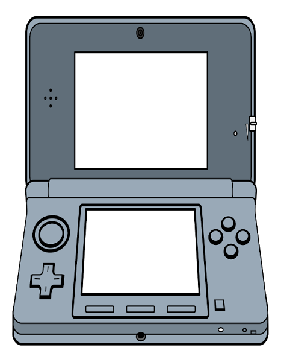

<dom-module id="tm-amazing-sitemap-gps">
  <template>
    <style>
      :host {
        box-sizing: border-box;
        display: inline-block;
        position: relative;
        width:100%;
        height:100%;
      }
      img {
        width:100%;
        height:100%;
      }
      tm-ascii-viewport {
        //border: solid red 1px;
        position: absolute;
        top: 18%;
        left: 30%;
        width: 40%;
        height: 25%;
      }
      tm-ascii-controls {
        position: absolute;
        width: 30%;
        top: 60%;
        left: 35%;
      }
    </style>
    
    <tm-ascii-viewport id="viewport" data="{{data}}" x-pos="{{x}}" y-pos="{{y}}" viewport-width="[[width]]" viewport-height="[[height]]"></tm-ascii-viewport>
    <tm-ascii-controls></tm-ascii-controls>
  </template>
  <script>
    (function(Polymer) {
      Polymer({
        is: 'tm-amazing-sitemap-gps',
        properties: {
          data: { type: String, notify:true },
          height: { type: String, notify: true },
          width: { type: String, notify: true },
          x: { type: String, notify: true },
          y: { type: String, notify: true }
        },
        observers: [
          'debug(prop)'
        ],
        moveForward: function() { this.$.viewport.moveForward(); },
        moveBackward: function() { this.$.viewport.moveBackward() },
        debug: function(object) {
          console.log(object);
        },
        ready: function() {
          console.log('Element tm-amazing-sitemap-gps has been created.');
        }
      });
    })(window.Polymer);
  </script>
</dom-module>
